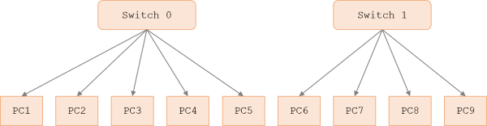
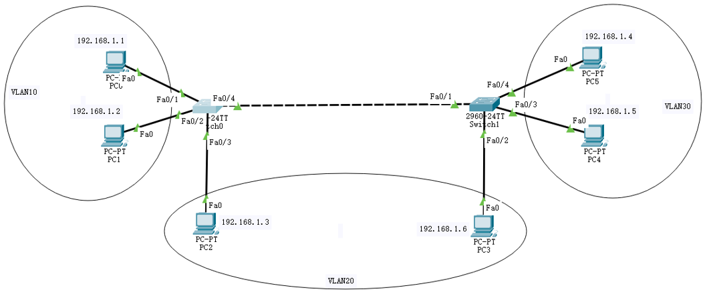
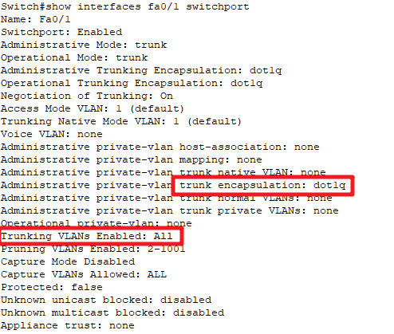
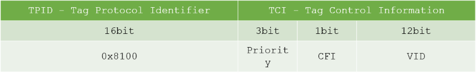
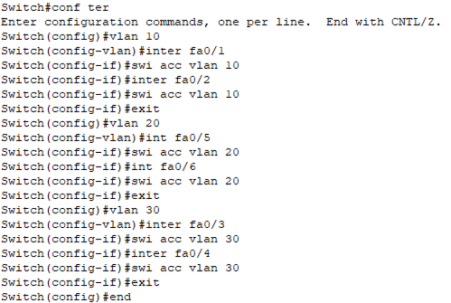
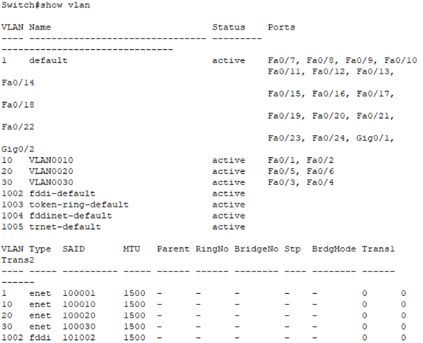
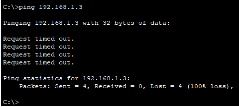
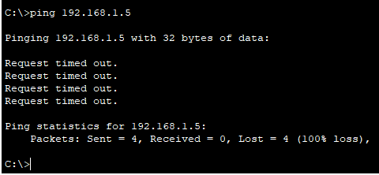
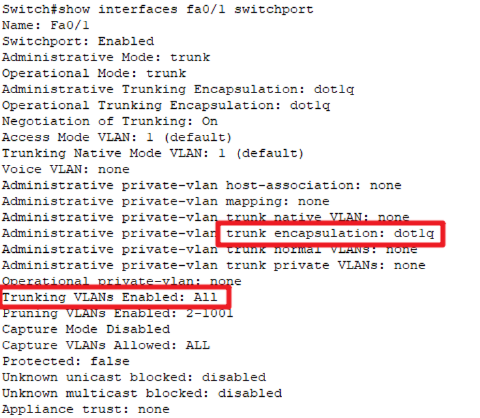

虚拟局域网 VLAN
- 内容
- 传统以太网的局限性
- 广播风暴
- 虚拟局域网的特点
- IEEE 802.1Q
- 常用的配置命令
- 实操
广播风暴
单交换配置VLAN
跨交换配置VLAN
- 传统以太网的局限性
- 资源的竞争
- 通信的私密性
- 广播风暴 Broadcast Storm
- Broadcast Storm is a network condition in which so many broadcasts are occurring (for example, for address verification purposes) that normal communication is disrupted.
- continually sending out broadcast messages
- the wire is continually busy
- no other station is able to transmit information


虚拟局域网 Virtual LAN
- 原理
- 虚拟局域网VLAN - virtual LAN
- 不是一种新的局域网，而是一个服务/应用
- 通过配置，将一个物理的局域网在逻辑上划分为若干个虚拟的LAN
- VLAN内的主机间可以直接通信，而VLAN 间不能直接互通
- 特点 Feature
- 限制/隔离广播域: 广播域被限制在一个VLAN内，节省带宽，提高网络的处理能力
- 增强局域网的安全性：不同VLAN内的报文在传输时是相互隔离的不同的VLAN用户不能和其它VLAN用户直接通信
- 提高网络的健壮性：故障被限制在一个VLAN内，本VLAN内的故障不会影响其他VLAN的正常工作
- 灵活构建虚拟工作组：划分不同的用户到不同的工作组，网络构建和维护更方便灵活、更容易
- 使用 Usage
- VLAN由id和name来标识；默认情况下，所有端口都属于VLAN 1
- 一个交换机可以划分多个VLAN
- 每个VLAN不受网络物理位置的限制
- 通常利用交换机的端口划分VLAN；一个端口只能属于一个VLAN；所以一般称 port VLAN
- 一个VLAN可以包含多个端口
- 端口模式
- access模式：默认模式。一般用于链接用户计算机；access端口只能属于一个VLAN
- trunk模式：用于交换机之间或交换机和路由器之间的链接；trunk端口可以属于多个VLAN
- hybrid混合模式【华为专有模式】
- 基本命令 Instruction
- 查看所有VLAN
- 查看指定id的VLAN
- 查看指定name的VLAN
- 创建VLAN
- 添加端口


二层交换机无法实现不同VLAN之间的通信
跨VLAN通信，需要三层设备

switch#show vlan

switch#show vlan id 1

switch#show vlan name xit

switch(config)#vlan 10
switch(config-vlan)#name gl

switch(config)#inte fa0/1
switch(config-if)#swi acc vlan 10

IEEE 802.1Q
- 简称dot one Q，加入4个字节的VLAN标记对以太网帧格式扩展，比普通以太网帧多4个字节
- 2个字节的标签协议标识TPID：固定为0x8100
- 2个字节的标签控制信息TCI，又包括：VLAN优先级、格式、ID号
- IEEE 802.1Q帧只在交换机内部识别并处理，用户主机并不能识别
- 处理过程
- 接收：每收到一个以太网帧，就打上标签：插入4个字节的VLAN标记，变成IEEE 802.1Q帧
- 转发：根据VLAN号转发到相应的端口，去掉标签后转发出去




实操 Drill
- 广播风暴
- 搭建拓扑并分配IP地址
- 各主机互相通信情况（发送简单PDU或者ping）
- 发送广播报情况
- 单个交换机的VLAN的划分
- 创建拓扑并分配IP
- 创建vlan10、vlan20、vlan30
- 为vlan添加相应的端口
- 测试通信情况：VLAN内部、VLAN之间
- 验证1：不同VLAN的用户不能通信
- 验证2：VLAN可以隔离广播域
模拟通信模式下，某个PC发送广播，查看各PC的通信情况
- 跨交换机的VLAN的划分
- 搭建拓扑
- 配置各主机IP
- 创建vlan10，20，30
- 划分端口到相应的VLAN
- 设置交换机互联端口为trunk模式
- 测试各VLAN的通信情况
- 查看交换机VLAN的配置情况
- 查看交换机trunk端口的详细信息




192.168.1.1 → 192.168.1.3
192.168.1.1 → 192.168.1.5




// 指定端口模式为trunk xit(config-if)#swit mode trunk // 查看指定端口的模式 xit#show inter fa0/1 swit // 允许通过的vlan xit#swi tru allowed vlan all xit#swi tru allo vlan 10,20 xit#swi tru allo vlan 10-20 xit#swi tru pruning vlan 10,20 xit#swi tru pruning vlan 10-20

Summary & Homework
- Summary
- VLAN的特点
- VLAN的配置
单交换机
跨交换机
- Homework
- 完善学校组织结构图的VLAN划分
自己指定VLAN号和对应的端口
测试不同VLAN之间的通信
测试广播域的通信
- 归纳总结交换机VLAN划分使用到的命令
- 拓展阅读